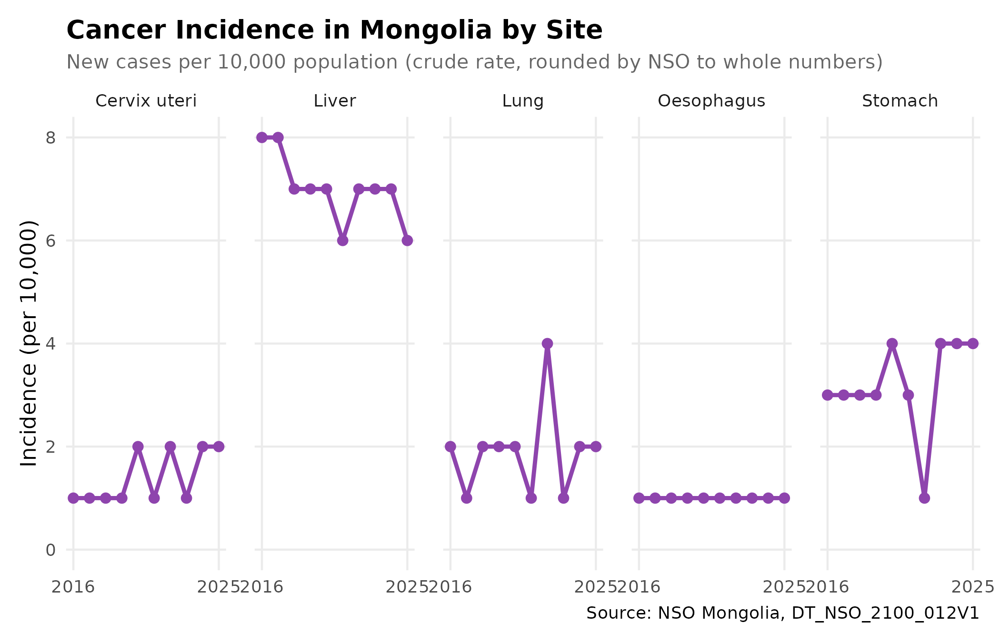
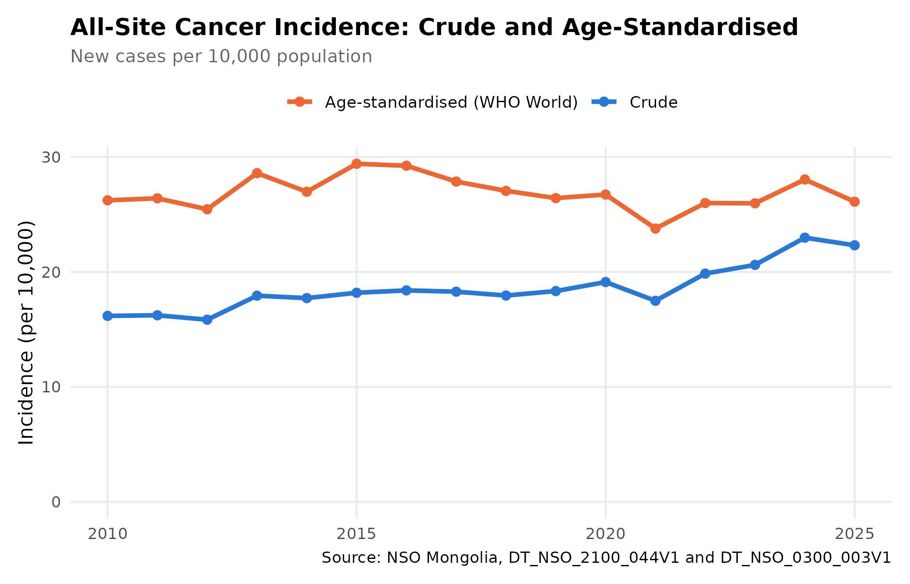
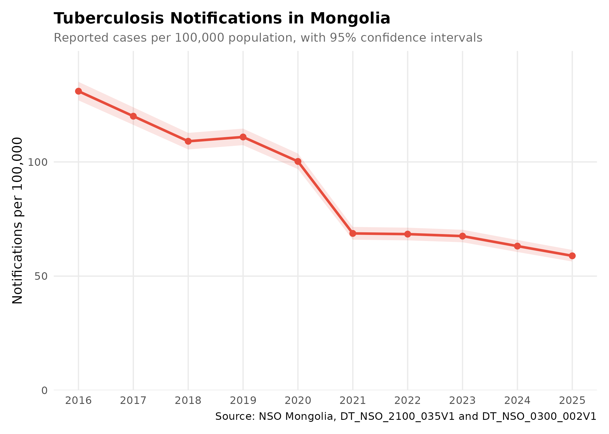

library(mongolstats)
library(dplyr)
library(ggplot2)
nso_options(mongolstats.lang = "en")
# Global theme with proper margins to prevent text cutoff
theme_set(
theme_minimal(base_size = 11) +
theme(
plot.margin = margin(10, 10, 10, 10),
plot.title = element_text(size = 13, face = "bold"),
plot.subtitle = element_text(size = 10, color = "grey40"),
legend.text = element_text(size = 9),
legend.title = element_text(size = 10)
)
)Overview
Mongolia’s National Statistics Office (NSO) publishes vital statistics and disease surveillance data that are useful for research and policy analysis. This guide shows how to find the right tables, check what they measure, and turn counts into rates.
Finding Health Tables
Search by Keyword
nso_itms_search() searches table titles across the whole
NSO catalogue. Some tables are listed in more than one folder, so
distinct() keeps one row per table:
# Mortality
mortality <- nso_itms_search("mortality")
mortality |>
distinct(tbl_id, tbl_eng_nm) |>
head(10)
#> # A tibble: 10 × 2
#> tbl_id tbl_eng_nm
#> <chr> <chr>
#> 1 DT_NSO_2100_014V1 NUMBER OF INFANT MORTALITY, aimags and the Capital and by …
#> 2 DT_NSO_2100_014V2 NUMBER OF INFANT MORTALITY, by soum and discrict, and by y…
#> 3 DT_NSO_2100_014V4 INFANT MORTALITY, by sex, by soum, and by year
#> 4 DT_NSO_2100_014V5 INFANT MORTALITY RATE, per 1000 live births, by sex, by so…
#> 5 DT_NSO_2100_015V1 INFANT MORTALITY RATE, per 1000 live births, aimags and th…
#> 6 DT_NSO_2100_015V2 INFANT MORTALITY, per 1000 live births, by soum, and by ye…
#> 7 DT_NSO_2100_023V1 MATERNAL MORTALITY RATIO, per 100000 live births, by soum,…
#> 8 DT_NSO_2100_030V2 UNDER-FIVE MORTALITY, per 1000 live births, aimags and the…
#> 9 DT_NSO_2100_040V1 NEONATAL MORTALITY, aimags and the Capital and by month
#> 10 DT_NSO_2100_040V2 NEONATAL MORTALITY RATE, per 1000 live births, aimags and …
# Cancer
cancer <- nso_itms_search("cancer")
cancer |> distinct(tbl_id, tbl_eng_nm)
#> # A tibble: 5 × 2
#> tbl_id tbl_eng_nm
#> <chr> <chr>
#> 1 DT_NSO_2100_012V1 NEW CASES OF CANCER, per 10000 population, by type of cance…
#> 2 DT_NSO_2100_013V1 DEATHS OF CANCER, per 10000 population, by type of cancer, …
#> 3 DT_NSO_2100_044V1 NEW CASES OF CANCER, by age group, by year
#> 4 DT_NSO_2100_045V1 NEW CASES AND MORTALITY OF CANCER, per 10000 population, ai…
#> 5 DT_NSO_2100_045V1 NEW CASES AND MORTALITY OF CANCER, per 10000 population, ai…
# Communicable diseases
infectious <- nso_itms_search("communicable")
infectious |> distinct(tbl_id, tbl_eng_nm)
#> # A tibble: 3 × 2
#> tbl_id tbl_eng_nm
#> <chr> <chr>
#> 1 DT_NSO_2100_020V2 INCIDENCE OF COMMUNICABLE DISEASES, by type of diseases, by…
#> 2 DT_NSO_2100_028V1 INCIDENCE OF COMMUNICABLE DISEASES, aimags and the Capital,…
#> 3 DT_NSO_2100_035V1 CASES OF COMMUNICABLE DISEASES, by type of selected disease…Read the title before you fetch: it tells you whether a table holds counts (“NUMBER OF …”, “CASES OF …”) or rates (“per 1000 live births”, “per 10000 population”), and at which level (“aimags and the Capital”, “by soum”).
Browse by Sector
Health and education statistics are grouped together:
# View all sectors
sectors <- nso_sectors()
sectors
#> # A tibble: 8 × 3
#> id type text
#> <chr> <chr> <chr>
#> 1 Economy, environment l Economy, environment
#> 2 Education, health l Education, health
#> 3 Historical data l Historical data
#> 4 Industry, service l Industry, service
#> 5 Labour, business l Labour, business
#> 6 Population, household l Population, household
#> 7 Regional development l Regional development
#> 8 Society, development l Society, development
# Find health-related subsectors
health_sector <- sectors |> filter(grepl("health", text, ignore.case = TRUE))
if (nrow(health_sector) > 0) {
subsectors <- nso_subsectors(health_sector$id[1])
subsectors |> head()
}
#> # A tibble: 6 × 3
#> id type text
#> <chr> <chr> <chr>
#> 1 Births, deaths l Births, deaths
#> 2 Disease l Disease
#> 3 General educational schools l General educational schools
#> 4 General indicators for Education l General indicators for Education
#> 5 Health insurance l Health insurance
#> 6 Main indicators for Health sector l Main indicators for Health sectorCase Study: Cancer Incidence
Exploring the Table
cancer_tbl <- "DT_NSO_2100_012V1" # New cases of cancer per 10,000 population
# Examine available dimensions
meta <- nso_table_meta(cancer_tbl)
meta
#> # A tibble: 2 × 5
#> dim code is_time n_values codes
#> <chr> <chr> <lgl> <int> <list>
#> 1 Type malignant neoplasms Хорт хавдрын төрөл FALSE 7 <tibble [7 × 3]>
#> 2 Year Он FALSE 26 <tibble [26 × 3]>
# Cancer types: codes are not in a meaningful order, so read the labels
cancer_types <- nso_dim_values(cancer_tbl, "Type malignant neoplasms", labels = "en")
cancer_types
#> # A tibble: 7 × 2
#> code label_en
#> <chr> <chr>
#> 1 0 "Total"
#> 2 1 " Liver"
#> 3 2 " Cervix uteri"
#> 4 3 " Stomach"
#> 5 4 " Lung"
#> 6 5 " Oesophagus"
#> 7 6 " Other"
# Year codes are internal ids; the labels hold the years
annual_meta <- nso_dim_values(cancer_tbl, "Year", labels = "en")
range(annual_meta$label_en)
#> [1] "2000" "2025"Incidence by Site
# The 10 most recent years
recent_years <- annual_meta |>
arrange(label_en) |>
tail(10) |>
pull(code)
# Specific sites only: drop the "Total" and "Other" categories. NSO labels
# can carry leading spaces, so trim them before comparing.
site_codes <- cancer_types |>
filter(!trimws(label_en) %in% c("Total", "Other")) |>
pull(code)
cancer_data <- nso_data(
tbl_id = cancer_tbl,
selections = list(
"Type malignant neoplasms" = site_codes,
"Year" = recent_years
),
labels = "en"
) |>
mutate(site = trimws(`Type malignant neoplasms_en`), year = as.integer(Year_en))
# One panel per site, on a shared scale, so overlapping lines do not hide each other
cancer_data |>
ggplot(aes(x = year, y = value)) +
geom_line(color = "#8e44ad", linewidth = 1) +
geom_point(color = "#8e44ad", size = 2) +
facet_wrap(~site, nrow = 1) +
scale_x_continuous(breaks = function(x) range(round(x))) +
scale_y_continuous(limits = c(0, NA), breaks = scales::breaks_width(2)) +
labs(
title = "Cancer Incidence in Mongolia by Site",
subtitle = "New cases per 10,000 population (crude rate, rounded by NSO to whole numbers)",
x = NULL,
y = "Incidence (per 10,000)",
caption = "Source: NSO Mongolia, DT_NSO_2100_012V1"
) +
theme(panel.grid.minor = element_blank(), panel.spacing = unit(1, "lines"))
Over these years, liver cancer has the highest average incidence, followed by stomach cancer. Two cautions apply to this table:
- Rounding. NSO rounds these rates to whole numbers per 10,000, so a change of 1 between years can be rounding alone.
- Single-year spikes. A value that jumps and then returns to its old level the next year, such as two sites trading places for one year, is more likely a data entry problem than a real change. Check such values with NSO before you interpret them.
Crude versus Age-Standardised Incidence
The rates above are crude: new cases divided by the whole population. Cancer risk rises steeply with age, so a crude rate climbs as a population ages even when the risk at each age is flat. Age-standardisation removes this effect. It applies each year’s age-specific rates to one fixed standard population, here the WHO World Standard Population (2000–2025).
NSO publishes the numerators and denominators needed: new cancer
cases by age group (DT_NSO_2100_044V1) and population by
age group (DT_NSO_0300_003V1).
# New cancer cases by age group and year (counts)
case_years <- nso_dim_values("DT_NSO_2100_044V1", "Year", labels = "en")
case_ages <- nso_dim_values("DT_NSO_2100_044V1", "Age group", labels = "en")
indicator <- nso_dim_values("DT_NSO_2100_044V1", "Indicator", labels = "en")
cancer_cases <- nso_data(
"DT_NSO_2100_044V1",
selections = list(
Indicator = indicator$code[trimws(indicator$label_en) == "New cases of cancer"],
"Age group" = case_ages$code,
Year = case_years$code
),
labels = "en"
) |>
transmute(year = Year_en, age = trimws(`Age group_en`), cases = value) |>
filter(age != "Total")
# Population by age group, same years, both sexes
pop_years <- nso_dim_values("DT_NSO_0300_003V1", "Year", labels = "en")
pop_ages <- nso_dim_values("DT_NSO_0300_003V1", "Age group", labels = "en")
pop_sex <- nso_dim_values("DT_NSO_0300_003V1", "Sex", labels = "en")
population <- nso_data(
"DT_NSO_0300_003V1",
selections = list(
Sex = pop_sex$code[trimws(pop_sex$label_en) == "Total"],
"Age group" = pop_ages$code,
Year = pop_years$code[pop_years$label_en %in% case_years$label_en]
),
labels = "en"
) |>
transmute(year = Year_en, age = trimws(`Age group_en`), population = value) |>
filter(age != "Total")
# The two tables use different age groups; collapse both to the cancer
# table's groups (0-4, 5-14, 15-19, ..., 60-64, 65+)
to_cancer_groups <- function(age) {
case_when(
age %in% c("5-9", "10-14") ~ "5-14",
age %in% c("65-69", "70-74", "75-79", "80-84", "85+", "70+") ~ "65+",
.default = age
)
}
# WHO World Standard Population (2000-2025), per million
who_standard <- tibble::tibble(
age = c(
"0-4", "5-9", "10-14", "15-19", "20-24", "25-29", "30-34", "35-39", "40-44",
"45-49", "50-54", "55-59", "60-64", "65-69", "70-74", "75-79", "80-84", "85+"
),
weight = c(
88569, 86870, 85970, 84670, 82171, 79272, 76073, 71475, 65877,
60379, 53681, 45484, 37187, 29590, 22092, 15195, 9097, 6348
)
) |>
mutate(age = to_cancer_groups(age)) |>
summarise(weight = sum(weight), .by = age)
population <- population |>
mutate(age = to_cancer_groups(age)) |>
summarise(population = sum(population), .by = c(year, age))
cancer_asr <- cancer_cases |>
inner_join(population, by = join_by(year, age)) |>
inner_join(who_standard, by = join_by(age)) |>
summarise(
crude = sum(cases) / sum(population) * 1e4,
# Direct standardisation: weighted mean of age-specific rates
standardised = sum(weight * cases / population) / sum(weight) * 1e4,
.by = year
) |>
mutate(year = as.integer(year)) |>
arrange(year)
cancer_asr
#> # A tibble: 16 × 3
#> year crude standardised
#> <int> <dbl> <dbl>
#> 1 2010 16.2 26.2
#> 2 2011 16.2 26.4
#> 3 2012 15.8 25.5
#> 4 2013 17.9 28.6
#> 5 2014 17.7 27.0
#> 6 2015 18.2 29.4
#> 7 2016 18.4 29.2
#> 8 2017 18.3 27.9
#> 9 2018 17.9 27.1
#> 10 2019 18.3 26.4
#> 11 2020 19.1 26.7
#> 12 2021 17.5 23.8
#> 13 2022 19.9 26.0
#> 14 2023 20.6 26.0
#> 15 2024 23.0 28.0
#> 16 2025 22.3 26.1
cancer_asr |>
tidyr::pivot_longer(c(crude, standardised), names_to = "measure", values_to = "rate") |>
mutate(measure = if_else(measure == "crude", "Crude", "Age-standardised (WHO World)")) |>
ggplot(aes(x = year, y = rate, color = measure)) +
geom_line(linewidth = 1.2) +
geom_point(size = 2) +
scale_color_manual(values = c("Crude" = "#2a78d6", "Age-standardised (WHO World)" = "#eb6834"), name = NULL) +
scale_y_continuous(limits = c(0, NA)) +
labs(
title = "All-Site Cancer Incidence: Crude and Age-Standardised",
subtitle = "New cases per 10,000 population",
x = NULL,
y = "Incidence (per 10,000)",
caption = "Source: NSO Mongolia, DT_NSO_2100_044V1 and DT_NSO_0300_003V1"
) +
theme(legend.position = "top", panel.grid.minor = element_blank())
Between 2010 and 2025, the crude rate changed by +38.0%, but the age-standardised rate changed by -0.5%. Most of the rise in crude incidence reflects an older population, not a higher risk of cancer at any given age. The age-standardised rate is higher than the crude rate because Mongolia’s population is younger than the WHO standard population.
Biostatistical note: Age-standardised rates are for comparison only: between years, between countries, or between groups with different age structures. They depend on the standard population chosen. Report the crude rate, or the number of cases, when the question is about the actual burden on health services. The 2021 dip in both rates coincides with the COVID-19 pandemic, when fewer people were diagnosed.
Finding Numerators and Denominators
Many NSO rate tables have matching count tables. With counts you can pool years, combine areas, and attach confidence intervals, which a published rate does not allow. For infant mortality:
-
DT_NSO_2100_014V1: infant deaths (count), by aimag and month -
DT_NSO_2100_018V5: live births (count), by aimag and month -
DT_NSO_2100_015V2: infant mortality rate (per 1,000 live births), by soum and year
Before you rely on rates you build yourself, check that they reproduce the published ones:
# National annual totals from a monthly count table
national_annual <- function(tbl) {
months <- nso_dim_values(tbl, "Month", labels = "en")
nso_data(tbl, selections = list(Region = "0", Month = months$code), labels = "en") |>
mutate(year = substr(Month_en, 1, 4)) |>
summarise(count = sum(value), n_months = n(), .by = year) |>
filter(n_months == 12) # complete years only
}
infant_deaths <- national_annual("DT_NSO_2100_014V1")
live_births <- national_annual("DT_NSO_2100_018V5")
# Published annual rate. This id names two tables in the catalogue, so
# mongolstats warns and uses the first match ("by soum, and by year"),
# which includes the national total.
imr_years <- nso_dim_values("DT_NSO_2100_015V2", "Year", labels = "en")
imr_published <- nso_data(
"DT_NSO_2100_015V2",
selections = list(Region = "0", Year = imr_years$code),
labels = "en"
) |>
select(year = Year_en, published = value)
imr_check <- infant_deaths |>
select(year, deaths = count) |>
inner_join(select(live_births, year, births = count), by = join_by(year)) |>
inner_join(imr_published, by = join_by(year)) |>
mutate(calculated = round(deaths / births * 1000, 1)) |>
arrange(year)
imr_check
#> # A tibble: 10 × 5
#> year deaths births published calculated
#> <chr> <dbl> <dbl> <dbl> <dbl>
#> 1 2016 1315 78194 17 16.8
#> 2 2017 1008 74328 14 13.6
#> 3 2018 1037 77528 13 13.4
#> 4 2019 1041 78223 13 13.3
#> 5 2020 878 76261 12 11.5
#> 6 2021 829 71659 12 11.6
#> 7 2022 814 65586 12 12.4
#> 8 2023 793 64306 12 12.3
#> 9 2024 702 57756 12 12.2
#> 10 2025 738 54137 14 13.6The calculated rates differ from the published ones by at most 0.5 per 1,000, because NSO rounds the published rate to a whole number. The count tables can be trusted to give the same answer. The Getting Started and Mapping guides use them to compare aimags.
Case Study: Tuberculosis Notifications
The monthly communicable disease table counts reported (notified) cases. To compare years, divide by the population at risk. Here we use the national mid-year population.
tb_tbl <- "DT_NSO_2100_035V1" # Cases of communicable diseases, by type and by month
# Find the code for tuberculosis
indicators <- nso_dim_values(tb_tbl, "Indicators", labels = "en")
tb_code <- indicators |>
filter(trimws(label_en) == "Tuberculosis") |>
pull(code)
tb_months <- nso_dim_values(tb_tbl, "Month", labels = "en")
tb_annual <- nso_data(
tbl_id = tb_tbl,
selections = list(Indicators = tb_code, Month = tb_months$code),
labels = "en"
) |>
mutate(year = substr(Month_en, 1, 4)) |>
summarise(cases = sum(value), n_months = n(), .by = year) |>
filter(n_months == 12)
# Mid-year population (denominator)
population <- nso_data(
"DT_NSO_0300_002V1",
selections = list(Region = "0", Year = tb_annual$year),
labels = "en"
) |>
select(year = Year_en, population = value)
tb_rate <- tb_annual |>
inner_join(population, by = join_by(year)) |>
mutate(
year = as.integer(year),
rate = cases / population * 1e5,
# Exact Poisson 95% confidence interval
lower = qchisq(0.025, 2 * cases) / 2 / population * 1e5,
upper = qchisq(0.975, 2 * (cases + 1)) / 2 / population * 1e5
) |>
arrange(year)
tb_rate
#> # A tibble: 10 × 7
#> year cases n_months population rate lower upper
#> <int> <dbl> <int> <dbl> <dbl> <dbl> <dbl>
#> 1 2016 4045 12 3088856 131. 127. 135.
#> 2 2017 3779 12 3148917 120. 116. 124.
#> 3 2018 3498 12 3208189 109. 105. 113.
#> 4 2019 3624 12 3267673 111. 107. 115.
#> 5 2020 3339 12 3332062 100. 96.8 104.
#> 6 2021 2331 12 3393455 68.7 65.9 71.5
#> 7 2022 2355 12 3443458 68.4 65.7 71.2
#> 8 2023 2357 12 3490859 67.5 64.8 70.3
#> 9 2024 2232 12 3534503 63.1 60.6 65.8
#> 10 2025 2104 12 3572835 58.9 56.4 61.5
tb_rate |>
ggplot(aes(x = year, y = rate)) +
geom_ribbon(aes(ymin = lower, ymax = upper), fill = "#e74c3c", alpha = 0.15) +
geom_line(color = "#e74c3c", linewidth = 1) +
geom_point(color = "#e74c3c", size = 2) +
scale_x_continuous(breaks = tb_rate$year) +
scale_y_continuous(limits = c(0, NA), expand = expansion(mult = c(0, 0.1))) + # start at 0
labs(
title = "Tuberculosis Notifications in Mongolia",
subtitle = "Reported cases per 100,000 population, with 95% confidence intervals",
x = NULL,
y = "Notifications per 100,000",
caption = "Source: NSO Mongolia, DT_NSO_2100_035V1 and DT_NSO_0300_002V1"
) +
theme(panel.grid.minor = element_blank())
The notification rate fell from 131 per 100,000 in 2016 to 59 in 2025.
Biostatistical note: A notification rate counts cases that were diagnosed and reported, not all new cases (incidence). It falls when case finding falls, as well as when transmission falls. The sharp drop in 2021 coincides with the COVID-19 pandemic, which disrupted tuberculosis services in many countries. These data cannot separate a true decline from missed diagnoses. For incidence, see the World Health Organization’s country estimates, which adjust for under-reporting.
Tips for Epidemiological Research
-
Check time coverage: Use
nso_table_periods()ornso_dim_values()to see which periods a table covers. Monthly tables usually include a partial current year; keep complete years for annual comparisons. - Check what a table measures: The title says whether values are counts or rates and gives the rate’s denominator.
- Prefer counts for analysis: Build rates from numerator and denominator counts, then check them against any published rate.
- Use the right denominator: Live births for infant and maternal mortality; mid-year population for incidence and crude death rates.
- Watch for ambiguous ids: A few table ids name more than one table. mongolstats warns and tells you which one it used.
-
Geographic detail varies: Many health tables are by
aimag; some are by soum (“by soum” in the title). Check the
Regiondimension withnso_dim_values().
Next Steps
- Mapping Health Outcomes: See the Mapping Guide for spatial epidemiology
- Reference Documentation: Explore all available functions in the Reference